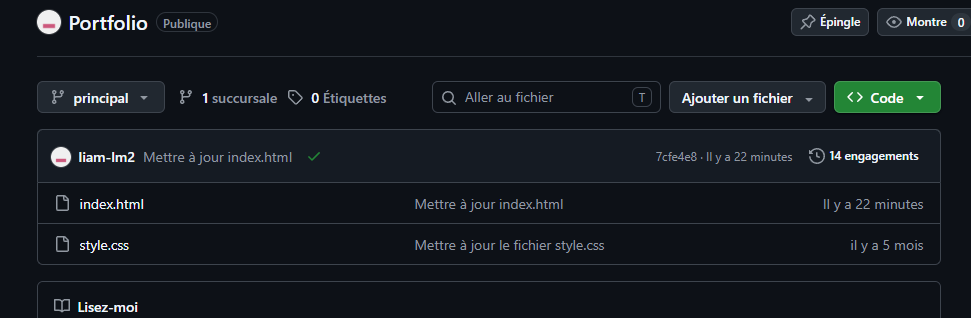

Étudiant en BTS SIO - option SISR
Bienvenue sur mon portfolio
Découvrir mon profilJe suis étudiant en BTS SIO, option SISR. Je m’intéresse aux infrastructures, aux systèmes Linux, aux réseaux et à la cybersécurité.
Cette formation me permet d’apprendre à installer, administrer et sécuriser des infrastructures informatiques : serveurs Linux, réseaux LAN/VLAN, pare-feu, gestion des utilisateurs et services d’entreprise.
À travers ma formation, je développe des compétences en administration système, configuration réseau, virtualisation, sécurité et documentation technique.
Mon objectif est de progresser dans les métiers de l’informatique orientés systèmes et réseaux, tout en consolidant mes compétences pratiques.
Debian, Ubuntu, commandes système et services.
Adressage IP, topologie, TCP/IP et VLAN.
VMware, machines virtuelles et tests d’infrastructure.
UFW, règles d’accès et bonnes pratiques de sécurisation.
Utilisateurs, groupes, permissions et services.
Rédaction technique, schémas et comptes rendus.
2025 - 2027
Formation orientée solutions d’infrastructure, systèmes et réseaux.
Travaux pratiques et projets d’infrastructure
Mise en place de serveurs Debian, configuration réseau, sécurité, documentation et déploiement de services.
Logikart - Stagiaire technicien informatique
Dates : À compléter
Lieu : Paris
Logikart est une société de services informatiques spécialisée dans l’infogérance et la maintenance de parcs informatiques. L’entreprise accompagne notamment des commerces et points de vente dans la gestion de leurs postes, réseaux, équipements et services informatiques.
Création de mon portfolio personnel pour présenter mon parcours et mes compétences.
Mise en place d’un serveur avec configuration réseau, utilisateurs, services et sécurité.
Conception et simulation d’une infrastructure réseau avec contraintes techniques.
Application de règles de filtrage, sécurisation des accès et contrôle des services.
Ce tableau présente les compétences mises en œuvre pendant ma formation et lors de mes réalisations professionnelles, notamment pendant mon stage chez Logikart.

Les cases bleues représentent les compétences mobilisées lors des réalisations.
Dans le cadre de ma formation, j’effectue une veille technologique sur le stockage des données dans l’ADN.
Cette technologie pourrait permettre de conserver une très grande quantité de données dans un espace réduit pendant une longue durée. Je recherche des sources fiables afin de suivre les évolutions, les expérimentations et les limites de cette solution.